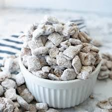

My Favorite Recipes
Puppy Chow

Ingredients
- 9 cups Rice Chex
- 1 Cup semisweet chocolate chips
- 1/2 cup peanut butter
- 1/4 cup butter
- 1 teaspoon vanilla
- 1 1/1 cups powdered sugar
Instructions
- Into large bowl, measure cereal; set aside.
- In 1-quart microwavable bowl, microwave chocolate chips, peanut butter and butter uncovered on High 1 minute; stir.
Microwave about 30 seconds longer or until mixture can be stirred smooth. Stir in vanilla.
- Pour mixture over cereal, stirring until evenly coated.
- Pour into 2-gallon resealable food-storage plastic bag.
- Add powdered sugar. Seal bag; shake until well coated. Spread on waxed paper to cool.
Store in airtight container in refrigerator.